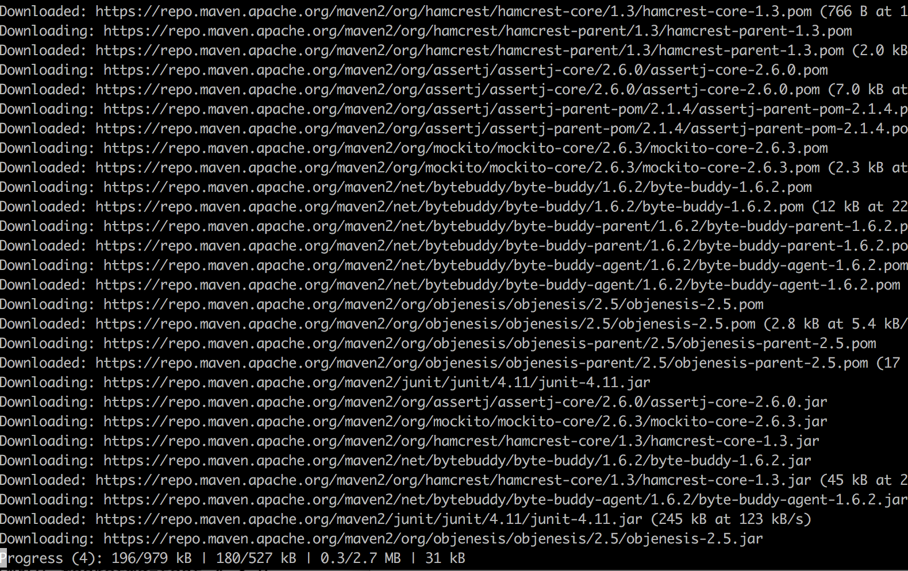
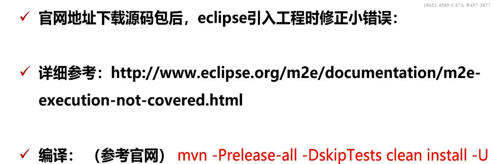

RocketMQ系列
读完RocketMQ系列将学会已下内容：
掌握RokectMQ集群搭建
生产者：解决消息同步/异步，延迟，顺序等问题
消费者： 真正理解Offset存储机制,消费端充实，幂等策略
核心原理，进阶掌握高可用机制，协调服务，刷盘赋值策略
分流/限流，缓存路由，负载均衡，分库分表，抗压点分析
RocketMQ 初探门径
RocketMQ整体认知
RocketMQ是一款分布式，队列模型的消息中间件
4.3.0版本之后开源事务消息的代码
截止2019年03月31日10:07:59最新版本为4.4.0
- 最新版支持分布式事务
- 天然支持集群模式，另外还支持负载均衡，水平扩展能力，支持广播模型
- 亿级别的消息堆积能力
- 采用零拷贝的原理，顺序写盘，随机读
- 丰富的API(同步消息，异步消息，顺序消息，延迟消息，事务消息)
- 代码优秀，底层通讯框架采用Netty
- NameServer代替Zookeeper(自己造轮子，相比zk更轻量)
- 强调集群无单点，可扩展，任意一点高可用，水平可扩展
- 消息失败重试机制，消息可查询 (RabbitMQ消息失败是不支持重试的，rocketmq如果失败了，broker负责重发)
- 开源社区活跃，成熟度高
RocketMQ概念模型
Producer
消息生产者，负责生产消息,一般由业务系统负责产生消息。 位于用户的进程内，Producer通过NameServer获取所有Broker的路由信息，根据负载均衡策略选择将消息发到哪个Broker，然后调用Broker接口提交消息。
Producer Group
生产者组，简单来说就是多个发送同一类消息的生产者称之为一个生产者组。
生产者可以有多个，启动时候可以定义多个节点同一个组。在RocketMQ中生产者组合消费者组是必须要定义的，并且一个环境只能起一个相同名称的group
Consumer
消息消费者，负责消费消息，一般是后台系统负责异步消费.
位于用户进程内。Consumer通过NameServer获取所有broker的路由信息后，向Broker发送Pull请求来获取消息数据。Consumer可以以两种模式启动，广播（Broadcast）和集群（Cluster），广播模式下，一条消息会发送给所有Consumer，集群模式下消息只会发送给一个Consumer。
- Push Consumer(推送的Consumer):Consumer的一种，需要向Consumer对象注册监听，监听mq向我们推消息
- Pull Consumer(拉取消息):Consumer的一种，需要主动请求Broker拉取消息
Consumer Group
消费者组，和生产者类似，消费同一类消息的多个 Consumer 实例组成一个消费者组。
这个比较好理解，比如三个消费者组成一个组，那么可以设置成发过来的消息都接受到，或者负载均衡各自接受消息(互相不重复) (集群模式或广播模式)
Topic
Topic用于将消息按主题做划分，Producer将消息发往指定的Topic，Consumer订阅该Topic就可以收到这条消息。Topic跟发送方和消费方都没有强关联关系，发送方可以同时往多个Topic投放消息，消费方也可以订阅多个Topic的消息。在RocketMQ中
Topic是一个上逻辑概念。消息存储不会按Topic分开， 一个Topic分布在多个Broker上。
Topic是一个上逻辑概念。消息存储不会按Topic分开， 一个Topic分布在多个Broker上。
Topic是一个上逻辑概念。消息存储不会按Topic分开， 一个Topic分布在多个Broker上。
Message
代表一条消息，使用MessageId唯一识别，用户在发送时可以设置messageKey，便于之后查询和跟踪。一个 Message 必须指定 Topic，相当于寄信的地址。Message 还有一个可选的 Tag 设置，以便消费端可以基于 Tag 进行过滤消息。也可以添加额外的键值对，例如你需要一个业务 key 来查找 Broker 上的消息，方便在开发过程中诊断问题。
Tag
标签可以被认为是对 Topic 进一步细化。一般在相同业务模块中通过引入标签来标记不同用途的消息。
Broker
Broker:MQ消息服务(中转角色，用于消息存储与生产消费转发)
Broker是RocketMQ的核心模块，负责接收并存储消息，同时提供Push/Pull接口来将消息发送给Consumer。Consumer可选择从Master或者Slave读取数据。多个主/从组成Broker集群，集群内的Master节点之间不做数据交互。Broker同时提供消息查询的功能，可以通过MessageID和MessageKey来查询消息。Borker会将自己的Topic配置信息实时同步到NameServer。
Broker与NameServer关系
1）连接 单个Broker和所有Name Server保持长连接。(NameServer是一个几乎无状态节点，可集群部署，节点之间无任何信息同步)
2）心跳
心跳间隔：每隔30秒向所有NameServer发送心跳，心跳包含了自身的Topic配置信息。
心跳超时：NameServer每隔10秒，扫描所有还存活的Broker连接，若某个连接2分钟内没有发送心跳数据，则断开连接。
3）断开：当Broker挂掉；NameServer会根据心跳超时主动关闭连接,一旦连接断开，会更新Topic与队列的对应关系，但不会通知生产者和消费者。
负载均衡
一个Topic分布在多个Broker上，一个Broker可以配置多个Topic，它们是多对多的关系。
如果某个Topic消息量很大，应该给它多配置几个Queue，并且尽量多分布在不同Broker上，减轻某个Broker的压力。
可用性
由于消息分布在各个Broker上，一旦某个Broker宕机，则该Broker上的消息读写都会受到影响。
所以RocketMQ提供了Master/Slave的结构，Salve定时从Master同步数据，如果Master宕机，则Slave提供消费服务，但是不能写入消息，此过程对应用透明，由RocketMQ内部解决。
有两个关键点：思考1一旦某个broker master宕机，生产者和消费者多久才能发现？
受限于Rocketmq的网络连接机制，默认情况下最多需要30秒，因为消费者每隔30秒从nameserver获取所有topic的最新队列情况，这意味着某个broker如果宕机，客户端最多要30秒才能感知。
思考2 master恢复恢复后，消息能否恢复。
消费者得到Master宕机通知后，转向Slave消费，但是Slave不能保证Master的消息100%都同步过来了，因此会有少量的消息丢失。但是消息最终不会丢的，一旦Master恢复，未同步过去的消息会被消费掉。
Queue
Topic和Queue是1对多的关系，一个Topic下可以包含多个Queue，主要用于负载均衡。发送消息时，用户只指定Topic ,，Producer会根据Topic的路由信息选择具体发到哪个Queue上。Consumer订阅消息时，会根据负载均衡策略决定订阅哪些Queue的消息。
也可以指定queue发送
SendResult sendResult=producer.send(message, new MessageQueueSelector() {
@Override
public MessageQueue select(List<MessageQueue> msgQueueList, Message message, Object arg) {
Integer queueNumber = (int) arg;
return msgQueueList.get(queueNumber);
}
},1);//这个1会回调给 public MessageQueue select(List<MessageQueue> list, Message message, Object arg) 的 arg,也就是指定发送到第1个队列
默认一个topic 有4个队列，下标：0-3 ；
这里要重写该构造方法， 1 表示的是指投递第一个队列queue
查看控制台日志可以看到该消息只投递到了 queueId= 1的队列
ps:投递的Id设置必须小于总的队列数
offset
RocketMQ在存储消息时会为每个Topic下的每个Queue生成一个消息的索引文件，每个Queue都对应一个Offset记录当前Queue中消息条数。
NameServer
NameServer的作用是注册中心，类似于Zookeeper，但又有区别于它的地方。每个NameServer节点互相之间是独立的，没有任何信息交互，也就不存在任何的选主或者主从切换之类的问题，因此NameServer与Zookeeper相比更轻量级。单个NameServer节点中存储了活跃的Broker列表（包括master和slave），这里活跃的定义是与NameServer保持有心跳。
它管理两部分数据：集群的Topic-Queue的路由配置；Broker的实时配置信息。其它模块通过Nameserv提供的接口获取最新的Topic配置和路由信息。
Producer/Consumer：通过查询接口获取Topic对应的Broker的地址信息Broker： 注册配置信息到NameServer， 实时更新Topic信息到NameServer
Broker集群
Broker是具体提供业务的服务器，单个Broker节点与所有的NameServer节点保持长连接及心跳，并会定时将Topic信息注册到NameServer，顺带一提底层的通信和连接都是基于Netty实现的。
Broker中分master和slave两种角色，每个master可以对应多个slave，但一个slave只能对应一个master，master和slave通过指定相同的Brokername，不同的BrokerId （master为0）成为一个组。master和slave之间的同步方式分为同步双写和异步复制，异步复制方式master和slave之间虽然会存在少量的延迟，但性能较同步双写方式要高出10%左右。
另外，Broker中还存在一些非常重要的名词需要说明：
Topic和Queue
RocketMQ的Topic/Queue和JMS中的Topic/Queue概念有一定的差异，JMS中所有消费者都会消费一个Topic消息的副本，而Queue中消息只会被一个消费者消费；但到了RocketMQ中Topic只代表普通的消息队列，而Queue是组成Topic的更小单元，集群消费模式下一个消费者只消费该Topic中部分Queue中的消息，当一个消费者开启广播模式时则会消费该Topic下所有Queue中的消息。Topic和Queue的具体关系可以参考下图

tags
Tags是Topic下的次级消息类型（注：Tags也支持TagA || TagB这样的表达式），可以在同一个Topic下基于Tags进行消息过滤。Tags的过滤需要经过两次比对，首先会在Broker端通过Tag hashcode进行一次比对过滤，匹配成功传到consumer端后再对具体Tags进行比对，以防止Tag hashcode重复的情况。Queue中具体的存储单元结构如下图：
流程图:

消息先发到Topic，然后消费者去Topic拿消息。Topic只是个逻辑上的概念，那它到底是怎么存储消息数据的呢，这里就要引入Broker 。
Topic的存储
Topic是一个逻辑上的概念，实际上Message是在每个Broker上以Queue的形式记录。

从上面的图片可以总结下几条结论。
- 消费者发送的Message会在Broker中的Queue队列中记录。
- 一个Topic的数据可能会存在多个Broker中。
- 一个Broker存在多个Queue。
- 单个的Queue也可能存储多个Topic的消息。
也就是说每个Topic在Broker上会划分成几个逻辑队列，每个逻辑队列保存一部分消息数据，但是保存的消息数据实际上不是真正的消息数据，而是指向commit log的消息索引。
Queue不是真正存储Message的地方，真正存储Message的地方是在CommitLog。
如下图所示

左边的是CommitLog。这个是真正存储消息的地方。RocketMQ所有生产者的消息都是往这一个地方存的。
右边是ConsumeQueue。这是一个逻辑队列。和上文中Topic下的Queue是一一对应的。消费者是直接和ConsumeQueue打交道。ConsumeQueue记录了消费位点，这个消费位点关联了commitlog的位置。所以即使ConsumeQueue出问题，只要commitlog还在，消息就没丢，可以恢复出来。还可以通过修改消费位点来重放或跳过一些消息。
部署模型

针对这张图做个说明
1、Producer和consumer集群部署，是你开发的项目进行集群部署。
2、Broker 集群部署是为了高可用，因为Broker是真正存储Message的地方，集群部署是为了避免一台挂掉，导致整个项目KO.
那Name SerVer是做什么用呢，它和Product、Consumer、Broker之前存在怎样的关系呢？
先简单概括Name Server的特点：
- NameServer是一个几乎无状态节点，可集群部署，节点之间无任何信息同步。
- 每个Broker与NameServer集群中的所有节点建立长连接，定时注册Topic信息到所有Name Server。
- Producer与NameServer集群中的其中一个节点（随机选择）建立长连接，定期从Name Server取Topic路由信息。
- Consumer与Name Server集群中的其中一个节点（随机选择）建立长连接，定期从Name Server取Topic路由信息。
这里面最核心的是每个Broker与NameServer集群中的所有节点建立长连接这样做好处多多。
1、这样可以使NameServer之间可以没有任何关联，因为它们绑定的Broker是一致的。
2、作为Producer或者Consumer可以绑定任何一个NameServer 因为它们都是一样的。
消费者
Consumer与Name Server关系
1）连接 : 单个Consumer和一台NameServer保持长连接，如果该NameServer挂掉，消费者会自动连接下一个NameServer，直到有可用连接为止，并能自动重连。
2）心跳: 与NameServer没有心跳（broker与nameserver之间有心跳）
3）轮询时间 : 默认情况下，消费者每隔30秒从NameServer获取所有Topic的最新队列情况，这意味着某个Broker如果宕机，客户端最多要30秒才能感知。
Consumer与Broker关系
1）连接 :单个消费者和该消费者关联的所有broker保持长连接。
负载均衡
集群消费模式下，一个消费者集群多台机器共同消费一个Topic的多个队列，一个队列只会被一个消费者消费。如果某个消费者挂掉，分组内其它消费者会接替挂掉的消费者继续消费。
生产者
Producer与Name Server关系
1）连接 单个Producer和一台NameServer保持长连接，如果该NameServer挂掉，生产者会自动连接下一个NameServer，直到有可用连接为止，并能自动重连。
2）轮询时间 默认情况下，生产者每隔30秒从NameServer获取所有Topic的最新队列情况，这意味着某个Broker如果宕机，生产者最多要30秒才能感知，在此期间，
发往该broker的消息发送失败。
3）心跳 与nameserver没有心跳
与broker关系
连接 单个生产者和该生产者关联的所有broker保持长连接。
RocketMQ源码包编译
这里我们使用4.4.0 ,因为官网4.5.0的包下载不了
https://www.apache.org/dyn/closer.cgi?path=rocketmq/4.4.0/rocketmq-all-4.4.0-source-release.zip
编译很简单 ,quickstart
unzip rocketmq-all-4.4.0-source-release.zip
> cd rocketmq-all-4.4.0/
> mvn -Prelease-all -DskipTests clean install -U
> cd distribution/target/apache-rocketmq
编译中

编译完成

源码包结构介绍

rocketmq-broker 主要的业务逻辑，消息收发，主从同步，packagecache
rocketmq-client 客户端接口，比如生产者和消费者
rocketmq-example 示例，比如生产者消费者
rocketmq-common 公用数据结构
rocketmq-distribution 编译模块，编译输出
rocketmq-filter 进行Broker过滤的不感兴趣的消息传输，减小带宽压力
rocketmq-logappender,rocketmq-logging 日志相关
rocketmq-nameserv : Nameserver服务，用于进行服务协调
rocketmq-openmessaging 对外提供服务
rocketmq-remoting 远程调用接口，封装Netty底层通信 ，最底层的远程通信
rocketmq-srvutil 提供一些公用的工具方法，比如解析命令行参数
rocketmq-store 消息存储
rocketmq-test,rocketmq-example
rocketmq-tools 管理工具，比如有名的mqadmin工具
编译完成后tar.gz包就在distribution/target目录下，另外rocketmq-distribution

rockeqmq-distribution/conf目录里面是一些配置

rocketmq-client主要提供客户端api
环境搭建
JDK1.8+
RocketMQ 4.3.X
nameserver用于协调，broker是服务器
我们先用单点，ip是192.168.0.111
1 编辑/etc/hosts
192.168.0.111 rocketmq-nameserver1
192.168.0.111 rocketmq-master1
s
2 上传，解压程序,建立软连接
tar -zxvf apache-rocketmq.tar.gz -C /usr/local/apache-rocketmq
#然后在/usr/local目录下建立软连接
sudo ln -s apache-rocketmq rocketmq

我们进到rocketmq的目录(其实是apache-rocketmq,软连接过了)里看下

bin 一些脚本
conf配置
lib目录
logs 我们新建的，放日志的
store 存储的
3 创建数据存储位置
这里的/usr/local/rocketmq就是刚才软连接过的目录
mkdir /usr/local/rocketmq/store # 实际数据存储位置
mkdir /usr/local/rocketmq/store/commitlog #生产者的数据存储在这里
mkdir /usr/local/rocketmq/store/consumequeue # 逻辑存储，类似于数据库的索引文件，放的是offset等
mkdir /usr/local/rocketmq/store/index # 索引 rocketmq是顺序写盘，随机读，随即读性能不高，所以加了index作了索引

4 修改rocketmq配置文件
我们修改2m-2s-async文件夹下的broker-a.properties文件
vim /usr/local/rocketmq/conf/2m-2s-async/broker-a.properties
#所属集群名字
brokerClusterName=rico-rocketmq-cluster
# broker名字,注意此处不同的配置文件填写的不一样
brokerName=broker-a
# id=0表示主节点，>0表示slave
brokerId=0
# nameserver地址,如果有多节点，就逗号分隔 这个主机名称是我们在etc/hosts中配置的 没配就写ip
namesrvAddr=rocketmq-nameserver1:9876
# 存储路径
storePathRootDir=/usr/local/rocketmq/store
#commitLog存储路径
storePathCommitLog=/usr/local/rocketmq/store/commitlog
#消费队列存储路径
storePathConsumeQueue=/usr/local/rocketmq/store/consumequeue
#消费索引存储路径
storePathIndex=/usr/local/rocketmq/store/index
#限制消息大小
maxMessageSize=65536
deleteWhen=04
fileReservedTime=48
brokerRole=ASYNC_MASTER
flushDiskType=ASYNC_FLUSH
5 修改日志配置文件
cd /usr/local/rocketmq/conf && sed -i 's#${user.home}#/usr/local/rocketmq#g' *.xml
意思是把rocketmq/conf文件夹下所有的xml文件中的${usr.home}替换为/usr/local/rocketmq
替换前

替换后


6 修改启动脚本参数
修改runbroker.sh
vim /usr/local/rocketmq/bin/runbroker.sh broker就是服务器，接收消息存储的地方就是broker
官方默认配了8g内存，rocketmq是比较吃内存的 ，如果机器内存太小，可能会出问题
JAVA_OPT="${JAVA_OPT} -server -Xms8g -Xmx8g -Xmn4g"
xms 默认 xmx最大 xmn最小
最小是1g，小于1g，nameserver和broker起不来
由于我这台笔记本是2010年买的，8年前的电脑了，当时买来是1g内存，后来加了2g内存变成3g
所以我设了1g的最大内存

修改runserver.sh
vim /usr/local/rocketmq/bin/runserver.sh runserver其实就是nameserver
server要求低一点
我也设了1g内存
启动
先启动nameserver
nohup ./mqnamesrv &

如果出现namesrvStartup说明启动成功
再启动broker
nohup ./mqbroker -c /usr/local/rocketmq/conf/2m-2s-async/broker-a.properties >/dev/null 2>&1 &
-c表示启动指定的配置文件
关于 >/dev/null 2>&1 可以看这篇文章 简单理解就是 表示标准输出重定向到空设备文件,也就是不输出任何信息到终端,不显示任何信息

启动后发现有日志输出了
使用命令查看broker的日志
tail -f -n 300 broker.log


再查看下namesrv.log如果没报错的话那么说明启动成功
关闭
先关闭broker

再关闭nameserver

RocketMQ控制台使用
https://github.com/apache/rocketmq-externals
这是扩展
有控制台扩展，php，go等
下载解压缩后进入到 rocketmq-externals-master/rocketmq-console目录
修改 src/main/resources/application.properties文件

默认通信端口为9876
然后启动这个SpringBoot项目mvn spring-boot:run 或先打包mvn package -Dmaven.test.skip=true
在部署RocketMQ插件时，遇到org.apache.rocketmq:rocketmq-tools:jar:4.4.0-SNAPSHOT包无法下载的问题：
rocketmq-externals源码中rocketmq-console-ng工程下的pom.xml文件中4.4.0-SNAPSHOT 声明的版本应改为4.4.0。


可以查看topic

可以新建topic


云主机部署rocketmq的配置：
在云服务器上 启动好nameServer和Broker之后, 启动生产者会报这样的错误
RemotingTooMuchRequestException: sendDefaultImpl call timeout
原因： BrokerIP展示的是云服务器的本地IP，不是公网IP 据说这个问题的原因是因为虚拟机的多网卡造成的.

解决方法：
在broker 中 加入 两行配置
namesrvAddr = 127.0.0.1:9876
brokerIP1=你的公网IP

启动broker的指令要修改下
nohup ./mqbroker -n 公网IP:9876 autoCreateTopicEnable=true -c /usr/local/rocketmq/conf/2m-2s-async/broker-a.properties >/dev/null 2>&1 &

控制台显示端口是10911,但是 程序仍然连接9876
RocketMQ入门
生产者使用
rocketmq在发消息的时候，如果mq中事先不存在这个消息中设置的topic，会自动帮你创建,并创建默认的队列
public class Producer {
public static void main(String[] args) throws MQClientException, RemotingException, InterruptedException, MQBrokerException {
//1 创建生产者对象DefaultMQProducer(一个应用中组名称不能重复)
//2 设置NamesrvAddr
//3 启动生产者服务
//4 创建消息并发送
DefaultMQProducer producer=new DefaultMQProducer("test_pull_producer_name");//传入生产者组组名
producer.setNamesrvAddr(Const.NAMESERV_ADDR_SINGLE);
producer.start();
//RocketMQ的消息封装成了Message的对象
for(int i=0;i<10;i++){
/** 创建消息
* new Message的参数
* 1 topic 主题 消费端订阅某一个主题
* 2 tags 标签 主要做一个过滤
* 3 keys 唯一id 用户自定义的
* 4 body 消息体 是字节格式的
*/
Message message=new Message("test_pull_topic","TagA","key"+i,("hello,rocketmq"+i).getBytes());//1 topic 2 tags 3 keys 4 body
message.setDelayTimeLevel(1);
/** 发送消息
* producer.send的参数
* msg 消息
* selector 某个topic的指定队列
* arg 参数
* sendCallback 回调
* timeout 超时时间
*/
SendResult sendResult=producer.send(message);//有返回值就是sendresult
/* 指定队列
SendResult sendResult=producer.send(message, new MessageQueueSelector() {
@Override
public MessageQueue select(List<MessageQueue> msgQueueList, Message message, Object arg) {
Integer queueNumber = (int) arg;
return msgQueueList.get(queueNumber);
}
},1);//这个1会回调给 public MessageQueue select(List<MessageQueue> list, Message message, Object arg) 的 arg,也就是指定发送到第1个队列
*/
//System.out.printf(sendResult.getSendStatus());//可以获取发送状态
System.out.println("消息发出"+sendResult.toString());//可以获取发送状态
Thread.sleep(1000);
}
producer.shutdown();
}
}
注意pom引入的client版本和rocketmq程序版本要一致
运行后控制台输出
消息发出SendResult [sendStatus=SEND_OK, msgId=0200021A487C18B4AAC204C1C3CD0000, offsetMsgId=51446DF900002A9F0000000000000000, messageQueue=MessageQueue [topic=test_pull_topic, brokerName=broker-a, queueId=2], queueOffset=0]
....
msgID自动生成的
messageQueue 表示放到哪个队列里
rocketmq在一个topic下默认会有4个队列，所以topic对queue是一对多的关系


消费者使用 & 重试机制
编写消费者代码
public static void main(String[] args) throws MQClientException {
/**
* 1创建消费者对象DefaultMQPushConsumer
* 2设置NamesrvAddr及其消费位置ConsumeFromWhere(消息消费的点在哪里?从哪里开始消费,有first,last)
* 3进行订阅主题subscribe
* 4注册监听并消费registerMessageListener (所以并不是mq主动推送给消费者的，上面的mqpushConsumer感觉像是主动推，其实并不是主动发消息的，是消费者注册监听，内部是长轮训的机制 )
*/
DefaultMQPushConsumer consumer=new DefaultMQPushConsumer("test_consumer");//传入消费者组名 有push和pull，最常用的是push
consumer.setNamesrvAddr(Const.NAMESERV_ADDR);
consumer.setConsumeFromWhere(ConsumeFromWhere.CONSUME_FROM_LAST_OFFSET);//last从最后端开始消费,first从头开始消费
consumer.subscribe("test_topic","TagA");//tag其实起到一个过滤的作用，当然你也可以写*,这样就不过滤了topic下所有的都消费
consumer.registerMessageListener(new MessageListenerConcurrently() {//并发的接口
@Override
public ConsumeConcurrentlyStatus consumeMessage(List<MessageExt> msgList, ConsumeConcurrentlyContext consumeConcurrentlyContext) {
//对消息处理的逻辑
MessageExt messageExt=msgList.get(0);//由于我们发的是单条消息，所以获取0就好了
try{
String topic=messageExt.getTopic();
String tag=messageExt.getTags();
String keys=messageExt.getKeys();
String msgBody=new String(messageExt.getBody(), RemotingHelper.DEFAULT_CHARSET);
System.out.println("topic:"+topic+"tag:"+tag+"keys"+keys+"msgBody:"+msgBody);
}catch (Exception e){
return ConsumeConcurrentlyStatus.RECONSUME_LATER;//如果失败，稍后重试
}
return ConsumeConcurrentlyStatus.CONSUME_SUCCESS;
}
});
consumer.start();
System.out.println("consumer start");
}

上面代码中有
catch (Exception e){
return ConsumeConcurrentlyStatus.RECONSUME_LATER;//如果失败，稍后重试
}
意思是如果发生异常，会再次重新push过来，过1s ,2s,5s,10s等间隔
那么如何知道目前是第几次重试呢？ 答：其实 MessageExt 中包含了重试次数
重试机制
其实mq在启动的时候进行了很多的配置项，可以去broker.log那里去看

总共有15次自动重试(如果一直失败)
模拟消息异常
public class Consumer {
public static void main(String[] args) throws MQClientException {
/**
* 1创建消费者对象DefaultMQPushConsumer
* 2设置NamesrvAddr及其消费位置ConsumeFromWhere(消息消费的点在哪里?从哪里开始消费,有first,last)
* 3进行订阅主题subscribe
* 4注册监听并消费registerMessageListener (所以并不是mq主动推送给消费者的，上面的mqpushConsumer感觉像是主动推，其实并不是主动发消息的，是消费者注册监听，内部是长轮训的机制 )
*/
DefaultMQPushConsumer consumer=new DefaultMQPushConsumer("test_consumer");//传入消费者组名 有push和pull，最常用的是push
consumer.setNamesrvAddr(Const.NAMESERV_ADDR_SINGLE);
consumer.setConsumeFromWhere(ConsumeFromWhere.CONSUME_FROM_LAST_OFFSET);//last从最后端开始消费,first从头开始消费
consumer.subscribe("test_pull_topic","TagA");//tag其实起到一个过滤的作用，当然你也可以写*,这样就不过滤了topic下所有的都消费
consumer.setConsumeMessageBatchMaxSize(1);//一次最多可以拉取多少消息
consumer.setConsumeThreadMax(20);//最多会有20个线程去拉取消息
consumer.setMaxReconsumeTimes(3);//最大重试次数3次
consumer.setMessageModel(MessageModel.CLUSTERING);//默认是CLUSTERING集群模式
consumer.registerMessageListener(//注册消息监听
new MessageListenerConcurrently() {//并发的监听,还有一个是MessageListenerOrderly,它是用作顺序消费的
@Override
public ConsumeConcurrentlyStatus consumeMessage(List<MessageExt> msgList, ConsumeConcurrentlyContext consumeConcurrentlyContext) {
//对消息处理的逻辑
MessageExt messageExt=msgList.get(0);//由于我们发的是单条消息，所以获取0就好了
try{
String topic=messageExt.getTopic();
String tag=messageExt.getTags();
String keys=messageExt.getKeys();
/*
if (messageExt.getQueueId() == 1) {
....
}*/
if(keys.equals("key2")) {//我们选取key2来当作失败
System.out.println("消息消费失败");
int a=1/0;
}
String msgBody=new String(messageExt.getBody(), RemotingHelper.DEFAULT_CHARSET);
System.out.println("topic:"+topic+"tag:"+tag+"keys"+keys+"msgBody:"+msgBody);
}catch (Exception e){
e.printStackTrace();
int reconsumeTimes = messageExt.getReconsumeTimes();//当前这条消息被重发了多少次
System.err.println("当前消息重发了: "+reconsumeTimes+"次");
if(reconsumeTimes == 3){
//记录日志,作补偿处理.....
return ConsumeConcurrentlyStatus.CONSUME_SUCCESS;
}
return ConsumeConcurrentlyStatus.RECONSUME_LATER;//如果失败，稍后重试
}
return ConsumeConcurrentlyStatus.CONSUME_SUCCESS;
}
});
consumer.start();
System.out.println("消费者启动了");
}
}

四种集群环境讲解

消费者组我们可以理解，多个消费者消费 进行 负载均衡
但是生产者组是干嘛呢？答： 多个生产者并行发消息，提高效率。还有后面的消息事务，如果一个消息失败了，broker会回调producer，如果一个producer失败了，可以连另一个producer
单点模式
主从模式(消息高可用，主节点可以对消息进行读写和收发，从节点不能接收消息，从节点从主节点里同步消息，这样消息不会丢失了。rocketmq不支持主从切换)
双主模式 (没有从节点，例如把一个topic建在2台master上)
双主双从模式 (实际中用的较多)，多主多从模式
主从集群环境构建
主从模式环境构建可以保障消息的即时性与可靠性
去主节点投递消息之后，会把数据同步给从节点，从而保障数据有副本。
故障重试(模拟)：投递一条消息后，关闭主节点(主节点挂了) ，消息能不能投递到从节点呢？
同步刷盘(投递过程中如果主节点挂了，会返回给我们失败)，
异步刷盘(投递过程中如果主节点挂了，会返回给我们投递成功，数据会丢失)。
主节点挂了之后，从节点可以继续提供消费者数据进行消费，但是不能接收消息。
主节点重新上线后进行消费进度offset同步
部署过程略
数据高可用机制故障演练
杀掉master的broker
发一条消息给master，然后杀掉master，看是否还能从slave中消费到消息
先发一条消息
public static void main(String[] args) throws MQClientException, RemotingException, InterruptedException, MQBrokerException {
DefaultMQProducer producer=new DefaultMQProducer("test_producer_name");//传入生产者组组名
producer.setNamesrvAddr(Const.NAMESERV_ADDR_MASTER_SLAVE);
producer.start();
//RocketMQ的消息封装成了Message的对象
for(int i=0;i<1;i++){
//创建消息
Message message=new Message("test_topic","TagA","key"+i,("hello,rocketmq"+i).getBytes());//1 topic 2 tags 3 keys 4 body
//发送消息
SendResult sendResult=producer.send(message);//有个返回值就是sendresult
//System.out.printf(sendResult.getSendStatus());//可以获取发送状态
System.out.println("消息发出"+sendResult.toString());//可以获取发送状态
}
producer.shutdown();
}

然后停止主节点的broker

此时只有一个slave

然后我们启动consumer,发现是可以消费到这条消息的


这就证明了在没有主节点的时候也可以做消息的消费,这就是高可用的测试
恢复master的broker
master的broker启动后第一件事情就是和slave的broker进行沟通，它们进行offset的同步，它发现slave已经把之前的消息消费了，就会作一个标记，Consumer再去拉取消息的时候就不会再消费一次了
RocketMQ 生产者核心
生产者参数解析
producerGroup :组名，一个应用里是唯一的，如果启动2个相同名称的group的话会报错
createTopicKey: 一般生产环境不会用到这个api,在项目启动之前由架构组创建维护
defaultTopicQueueNums 默认为4 :**一个topic下可以挂多少队列** 默认4个队列
sendMsgTimeout:消息发送超时时间，单位ms
compressMsgBodyOverHowmuch:当消息体超过多大时进行压缩。 默认压缩字节4096
**retryTimesWhenSendFailed**: 消息发送失败了可以重试几次 (同步)
retryTimesWhenAsyncSendFailed: 消息发送失败了可以重试几次 (异步)
retryAnotherBrokerWhenNotStoreOK 默认false,如果没有存储成功是否可以去其他Broker
maxMessageSize:默认128K，如果超过这个值会抛异常
主从同步机制解析
同步/异步消息发送解析
底层Netty通信解析
延迟消息投递解析
RocketMQ 消费者核心
This blog is under a CC BY-NC-SA 3.0 Unported License
本文链接：http://hogwartsrico.github.io/2020/08/17/RocketMQ/